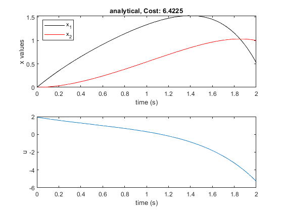
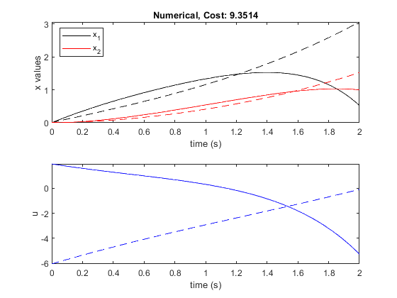
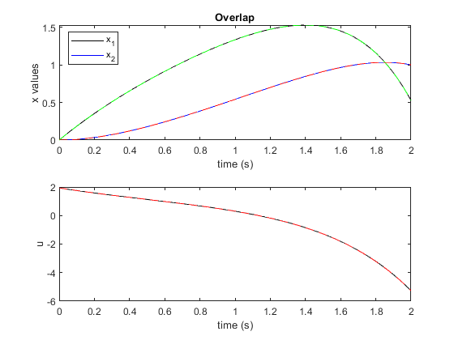
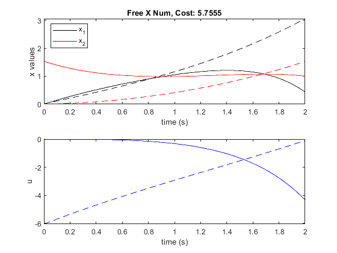

Contents
Homework 3 Problem 2
clear
close all
clc
Analytical Solution
A =-1*[0 -1 1 0
-1 1 0 0
1 0 0 1
0 1 1 -1];
[V, s] = eig(A)
syms A B C D t
x = A.*V(:,1)*exp(s(1,1).*t)+B.*V(:,2).*exp(s(2,2).*t)+C.*V(:,3).*exp(s(3,3).*t)+D.*V(:,4).*exp(s(4,4).*t);
x_0 = subs(x,t,0);
eqn(1) = 0 == x_0(1);
eqn(2) = 0 == x_0(2);
x_f = simplify(subs(x,t,2));
eqn(3) = 1 == x_f(2);
eqn(4) = 10*x_f(1) == x_f(3);
k = [A B C D];
ks = solve(eqn,k);
kd(1) = double(ks.A);
kd(2) = double(ks.B);
kd(3) = double(ks.C);
kd(4) = double(ks.D);
kd
x = subs(x,k,kd);
x_f = subs(x_f,k,kd);
tl = linspace(0,2);
x_t = double(subs(x,t,tl));
L = (x(1)).^2+(x(2)).^2+(-1*x(3)).^2;
J = double(5*(x_f(1)).^2+0.5*int(L,t,0,2));
figure(1)
subplot(2,1,1)
plot(tl,x_t(1,:),'-k',tl,x_t(2,:),'-r')
title("analytical, Cost: "+num2str(J));
xlabel('time (s)');
ylabel('x values');
legend('x_1','x_2','location','northwest');
subplot(2,1,2);
plot(tl,-1*x_t(3,:));
xlabel('time (s)');
ylabel('u');
V =
0.5649 0.0000 -0.7559 0.4533
-0.7716 -0.5774 -0.3780 0.1659
0.2068 -0.5774 0.3780 -0.6193
-0.2068 -0.5774 0.3780 0.6193
s =
-1.7321 0 0 0
0 -1.0000 0 0
0 0 1.0000 0
0 0 0 1.7321
kd =
-1.3539 2.5201 -1.2865 -0.4582

Numerical solutions
[TX,SX] = ode45(@(tx,sx)eom(tx,sx),linspace(0,2,201),[10e-3,10e-3]);
[TL,Lambda] = ode45(@(tx,sx)LagrangeEom(tx,sx,TX,SX),TX(end:-1:1),[10*SX(1,end),0]);
xg = [SX(:,1) SX(:,2) Lambda(:,1) Lambda(:,2)]';
solinit.x = TX;
solinit.y = xg;
sol = bvp4c(@(tx,sx)ELeom(tx,sx),@bcfunc,solinit);
sol2 = bvp4c(@(tx,sx)ELeom(tx,sx),@bcfunc2,solinit);
figure(2)
subplot(2,1,1)
J2 = 5*sol.y(1,end)^2+0.5*trapz(sol.x,sol.y(1,:).^2+sol.y(3,:).^2+(sol.y(3,:)).^2);
plot(sol.x,sol.y(1,:),'-k',sol.x,sol.y(2,:),'-r',TX',SX(:,1)','--k',TX,SX(:,2)','--r')
title("Numerical, Cost: "+num2str(J2));
xlabel('time (s)');
ylabel('x values');
legend('x_1','x_2','location','northwest');
subplot(2,1,2);
plot(sol.x,-1*sol.y(3,:),'-b',TX',-1*flip(Lambda(:,1)),'--b');
xlabel('time (s)');
ylabel('u');
figure(3)
subplot(2,1,1)
plot(tl,x_t(1,:),'-k',tl,x_t(2,:),'-b',sol.x,sol.y(1,:),'--g',sol.x,sol.y(2,:),'--r')
title("Overlap");
xlabel('time (s)');
ylabel('x values');
legend('x_1','x_2','location','northwest');
subplot(2,1,2);
plot(tl,-1*x_t(3,:),'-k',sol.x,-sol.y(3,:),'--r');
xlabel('time (s)');
ylabel('u');
figure(4)
subplot(2,1,1)
J4 = 5*sol2.y(1,end)^2+0.5*trapz(sol2.x,sol2.y(1,:).^2+sol2.y(3,:).^2+(sol2.y(3,:)).^2);
plot(sol2.x,sol2.y(1,:),'-k',sol2.x,sol2.y(2,:),'-r',TX',SX(:,1)','--k',TX,SX(:,2)','--r')
title("Free X Num, Cost: "+num2str(J4));
xlabel('time (s)');
ylabel('x values');
legend('x_1','x_2','location','northwest');
subplot(2,1,2);
plot(sol2.x,-1*sol2.y(3,:),'-b',TX',-1*flip(Lambda(:,1)),'--b');
xlabel('time (s)');
ylabel('u');
function ds = eom(~,sx)
ds(1) = 1+sx(2);
ds(2) = sx(1)-sx(2);
ds = ds';
end
function ds = LagrangeEom(tx,sx,TX,SX)
X = interp1(TX,SX,tx);
ds(1) = -X(1)-sx(2);
ds(2) = -X(2)-sx(1)+sx(2);
ds = ds';
end
function ds = ELeom(~,sx)
u = -sx(3);
ds(1) = sx(2)+u;
ds(2) = sx(1)-sx(2);
ds(3) = -(sx(1)+sx(4));
ds(4) = -(sx(2)+sx(3)-sx(4));
ds = ds';
end
function con = bcfunc(so,sf)
con(1) = so(1);
con(2) = so(2);
con(3) = sf(2)-1;
con(4) = sf(3)-10*sf(1);
end
function con = bcfunc2(so,sf)
con(1) = so(3);
con(2) = so(4);
con(3) = sf(2)-1;
con(4) = sf(3)-10*sf(1);
end
  